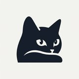

【官宣】拾青环保布袋 × 白露LuLu：用微光点亮绿色生活
我们很高兴地宣布，拾青环保布袋与白露LuLu达成合作！
拾青一直倡导可持续的生活方式，一个小小的环保布袋， 就能减少一份塑料污染。白露LuLu在公益领域的坚持， 特别是对绿水青山的守护，与拾青的理念高度契合。
让我们一起，把环保变成一种日常，用微光点亮绿色生活。
欢迎白露LuLu成为拾青环保合伙人！
我们很高兴地宣布，拾青环保布袋与白露LuLu达成合作！
拾青一直倡导可持续的生活方式，一个小小的环保布袋， 就能减少一份塑料污染。白露LuLu在公益领域的坚持， 特别是对绿水青山的守护，与拾青的理念高度契合。
让我们一起，把环保变成一种日常，用微光点亮绿色生活。
欢迎白露LuLu成为拾青环保合伙人！
全部回复 (3)
